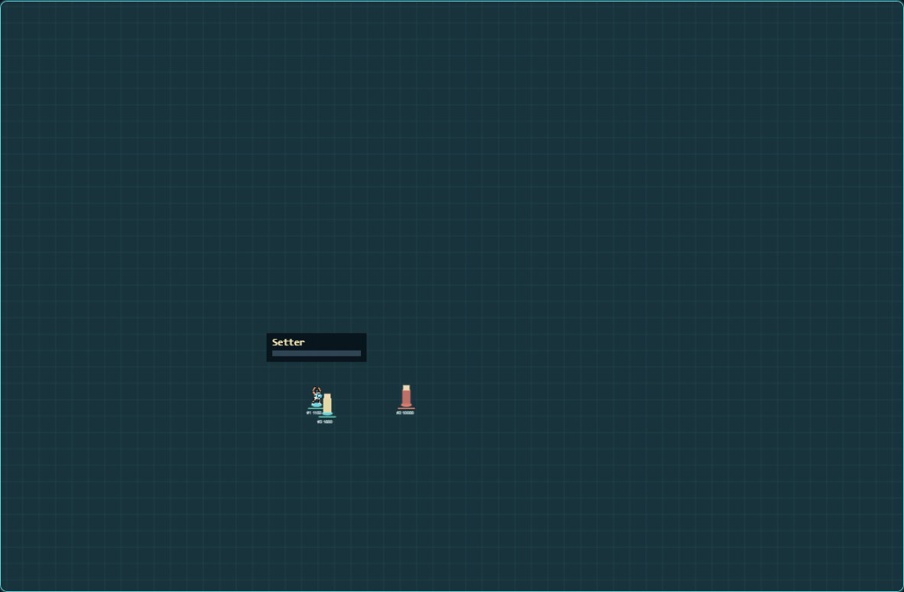
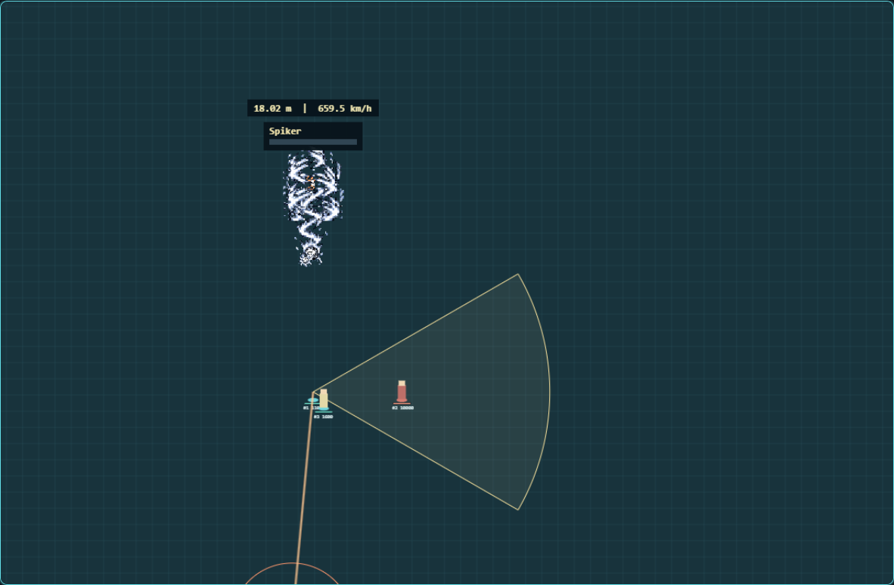
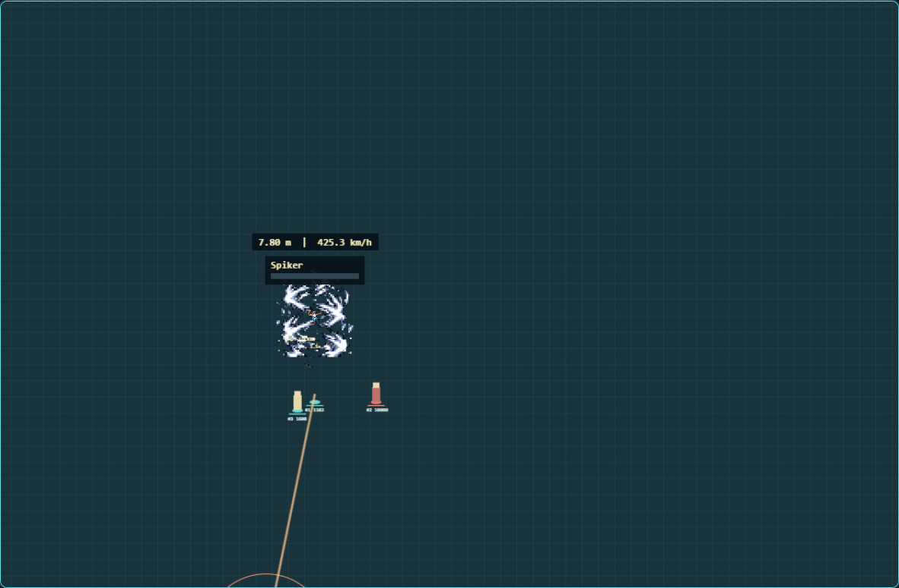

Shared-core prototype. Existing body/effect artwork remains a proposal; no game installation or release packaging.
Open Lab · Self Set + Serve demo · Spike-only demoChoose 1/3/5 bars. A paid Self Set carries into its spike and cannot receive another Burst. Every Burst play ends with 1.5 seconds of exhaustion. Receive carries at most 300% of a snapshotted ordinary spike into the next spike or volley.
The resource is one overhead bar with the current role. Height and actual km/h appear together. The new map panel sets distant aim without revealing hidden enemies.
Every metre above 2 m adds 15 Power points. Impossible builds another 200 points during its 2.5-second charge. This 18.02 m example rises from 470 to 670 Power and 462.7 to 659.5 km/h without Receive. The speed cap is 1200 km/h for Impossible and 600 for ordinary balls.


Prior White form, a five-bar Set or takeoff, perfect takeoff and valid contact qualify. Neither Set nor Serve is mandatory. Earlier contact holds its real height. The first second permits global aiming; the final 1.5 seconds lock the public line and impact circle. The projectile pierces units/walls with one hit per enemy, then returns.

White remains the highest permanent body. This uses existing bodies, strokes and effects; no new appearance approval is implied. Native high-altitude rendering and final continuous warning artwork still require acceptance.
Incoming Receive and ally-support receipts are simulated in the Lab and disabled natively until calibrated. Serve has no reveal feature. Automated checks, Lab observations and actual-game acceptance remain separate.
Current formulas and limitations · Preserved 3.0 evidence · Preserved 2.2 evidence